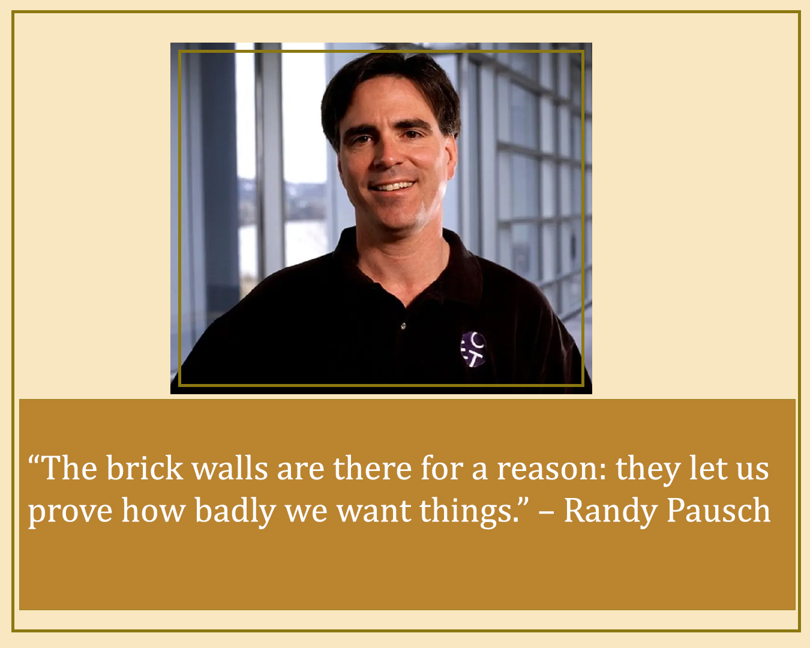

Week 02 – Create a Life of Meaning – Journal Entry
This week I started my learning with the reading Stars and Steppingstones by Jeff Sandefer. The reading helped me reflect on what is truly important in life and reminded me that having a job alone is not enough if it is not connected to a deeper purpose. Sandefer teaches that each of us has a spark of divine inspiration that can guide us toward our stars, which represent our long-term goals and the direction we want our lives to take.
The reading explains that we do not need to have a perfect or detailed plan, but we do need to be intentional. Steppingstones represent the small choices, experiences, and actions that help us move closer to our goals. These steps may change as life unfolds, but they should always support our larger purpose. One important message from the reading is that meaningful work comes from discovering what needs to be done and committing to do it well, which can turn a career into a mission.
The reading also emphasizes that life is shaped by choice. In a free society, we have the opportunity and responsibility to decide how we spend our lives, accept the consequences of our decisions, and adapt when reality changes. Overall, Stars and Steppingstones taught me that finding purpose comes from understanding what matters most, setting meaningful goals, and making thoughtful choices while remaining flexible as life unfolds.
What Is Your Calling in Life?
I enjoyed the talk What Is Your Calling in Life? by Jeffery A. Thompson. I loved how he teaches that the Lord gives us the power to become who we need to be in this life. His message brought inspiration and clarity about finding a calling. I learned that a calling is not something we must anxiously search for or perfectly define, but something that develops as we use our gifts to serve others. Meaningful work does not need to be glamorous or easy, and true purpose comes from service, not status. Most of all, the talk strengthened my understanding that Jesus Christ is central to discovering our calling, and through His grace we are guided step by step to where we are needed most.
Thompson explains that we are not limited to a single perfect job. God gives each of us unique spiritual gifts, and our calling is to use those gifts wherever we are placed. These gifts can be applied in many different careers or situations, and the Lord often guides us gradually through experiences rather than giving one clear, immediate answer. Work becomes meaningful when we focus on serving others rather than seeking recognition or personal gain, and sacrifice is often part of fulfilling a true calling.
The talk emphasizes that real meaning in life comes from service, not profession. Any honest work can be sacred when done with the intention to bless others. By relying on Christ and using our gifts, we are gradually led to the places where we are most needed, and our work becomes purposeful and fulfilling.
Treat Life As an Experiment
The video Treat Life As an Experiment offers several valuable lessons. One of the key ideas is to view life as a series of experiments and to approach new experiences with curiosity rather than fear of failure. Personally, I am not a fan of failing, but the video reminded me that failure is not the opposite of success; it is part of the process.
Tom Kelley shares inspiring examples of people whose persistence paid off despite many setbacks. Thomas Edison made 10,000 attempts before creating a working light bulb. The creators of WD-40 failed 39 times before formula number 40 succeeded. James Dyson reportedly built 5,128 prototypes before producing a vacuum that could be sold. These stories show that success often comes through repeated effort, patience, and persistence over time. Ultimately, the main lesson is clear: life and innovation thrive when we experiment, learn from failures, persist, and gradually build toward success.
Randy Pausch’s Last Lecture
The theme of this reading is truly powerful. Even before I started reading, it made me automatically reflect on my own childhood dreams and the hopes I carried as a child. Randy Pausch’s message invites us to look back with gratitude, to recognize the passions that shaped us, and to consider how we can live with purpose today. It is a gentle reminder that the dreams we once held are not just memories. They are seeds of inspiration that can guide our choices, nurture our creativity, and encourage us to live fully with integrity and faith. Watching the video and seeing him so excited and full of energy to share his message, despite his illness, was deeply emotional.
Randy Pausch’s Last Lecture offers powerful lessons about life and pursuing our dreams. He reminds us to pursue our childhood dreams with persistence and tenacity, embracing setbacks and obstacles as opportunities to grow. Challenges, or “brick walls,” are not there to stop us but to test how much we truly want something. Pausch emphasizes the value of creativity and encourages nurturing it in ourselves and others. Patience and understanding allow us to see the good in people, and living with integrity and purpose ensures that our dreams will follow. Ultimately, the lecture teaches that a meaningful life comes from persistence, learning from failures, fostering creativity, and living intentionally.
A particularly moving aspect of the lecture is what Pausch calls the “second head fake.” The lecture was ultimately intended for his three young children, offering a roadmap for their lives after he was gone. His words remind us that life is not only about pursuing our own dreams, but also about living with love, gratitude, and faith, leaving a legacy that uplifts and inspires others.
Randy Pausch was able to achieve many of his childhood dreams because he worked hard, stayed focused, and never gave up, even when things were difficult. I think dreaming is very important because it gives us goals to reach for and motivates us to keep learning and growing. One of my childhood dreams was to become good at photography. I believe I can achieve this dream by practicing, learning new skills, and using photography to capture moments that matter to me and others.
Life Plan Bucket List Assignment
I had the opportunity to list 50 things that I would like to accomplish in my life. It was a little hard to think of all the things at first, but I was able to complete the list. Overall, it was a good and meaningful experience that helped me reflect on my goals and priorities.
“Live Like You Were Dying” – The Bucket List Song
I had never heard the song “Live Like You Were Dying” by Tim McGraw before, and the lyrics are very meaningful. It reminded me that life is fragile and that we should not wait for difficult moments to start living with purpose, loving others more deeply, and focusing on what truly matters.
Overall, this second week helped me reflect deeply on my purpose, the importance of service, and how small steps can guide us toward our larger goals. Journaling continues to help me see patterns in my thinking, understand my priorities, and grow spiritually and personally.